Threats To Earth
Erik Killmonger
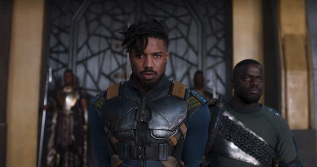
Killmonger is one of the MCU’s best Marvel villains because he’s fighting for a cause that is actually quite reasonable. It’s not just one pure evil guy (or woman) versus the heroes. A lot of thought and backstory was put into Killmonger, and it didn’t start with what makes him evil.
Loki
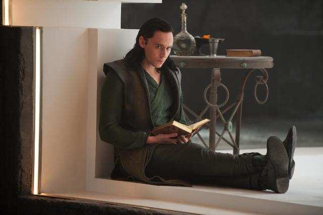
Loki is the, for lack of a better word, emo adopted son of Odin and Thor’s brother. He’s always felt second best, and tries to give himself something to live for by being bad. He loves his brother — and no matter how much they hate each other, they’d actually do anything for each other when their lives depend on it. Loki is complicated and has more emotional depth than most villains.
Vulture
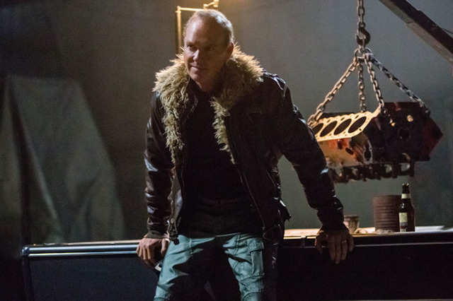
Vulture is one of the rare villains in the MCU that has a personal vendetta against the superheroes who doesn’t feel like a desperate tie-in. The battle in 2012’s “The Avengers” affected his livelihood: He ran a company that cleaned up damage from superhero battles. But the Department of Damage Control, put together by the federal government with the help of Tony Stark, caused the company to fold. In their final battle, Spider-Man saves Vulture’s life. In prison, Vulture refuses to reveal Spider-Man’s real identity.
Red Skull
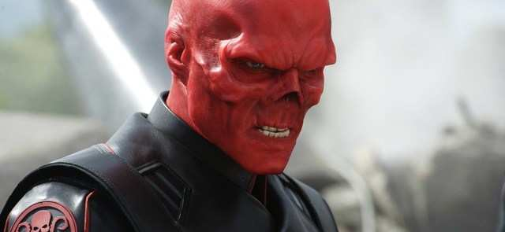
Red Skull is pure evil - there’s not even a bit of humanity left in him. He’s a Nazi that became a confidant of Adolf Hitler. But he turned his back on the Nazis in his search for the coveted Tesseract, and his mission to take over the world for himself. He’s a one-note villain, but Hugo Weaving’s performance makes him more terrifying than what was on the page.
Hela
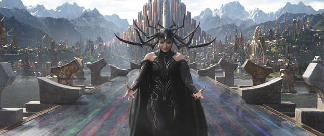
Hela brought the royal family of Asgard some drama that beats anything. In “Ragnarok,” Thor and Loki find out they have a long-lost sister who is the goddess of death. And also she’s super evil! They didn't know about this because Odin erased her existence from Asgardian history. Hela (very) easily destroys Thor’s hammer then takes over Asgard, posing a very real threat to a kingdom that’s about to meet its prophesized demise.
Obadiah Stane
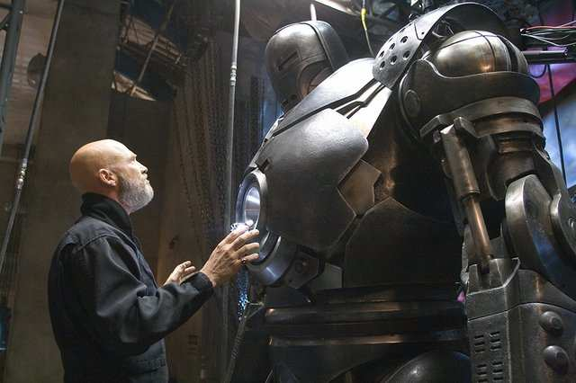
Obadiah Stane defined what these villains could and should be. First appearing as a mentor to our hero, Tony Stark, the twist is that Obadiah has been planning to take over the company, and is pissed when Stark decides to stop manufacturing weapons. His motivations, while not relatable, make sense, and he has the intelligence, resources, and talent to be believably threatening.
Ego the Living Planet
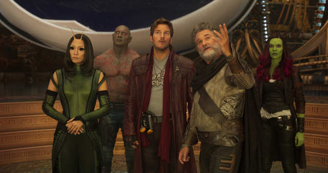
Ego was so darn likeable that while it was a bit expected that he turned out to be a villain, it was also shocking and a little difficult to take in. He was such a likable guy before we find out he’s actually a really evil mass murderer! Being Starlord/Peter Quill's dad helped build some emotional attachment to Ego, which made the twist that he was bad even better than if he had been just some guy.
The Grandmaster
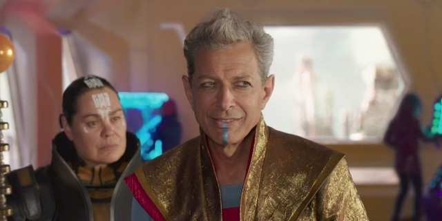
Jeff Goldblum’s The Grandmaster wasn’t a primary villain, but it’s Jeff Goldblum, so we had to include him here. Although his role is very minor and not directly related to the overall story the MCU is telling - or even the story within “Ragnarok,” Goldblum’s appearance made the movie wild and weird in the best way.
Helmut Zemo
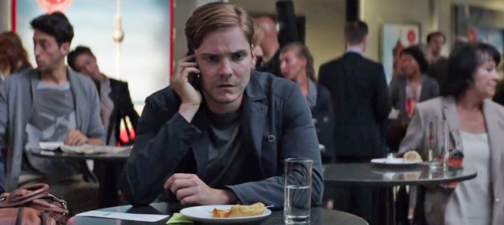
Helmut Zemo blurs the lines between a desperate tie-in and a successful one. It works, but by a small margin. Zemo hates the Avengers - and plots to pit Captain America and Iron Man against each other - because his family was crushed by a building in Slovakia during the Avengers' battle with Ultron in “Avengers: Age of Ultron.” It’s refreshing to see some consequences for the damage superheroes cause. Their heroic actions result in damaged cities and dozens of deaths that create vengeful villains.
Ultron
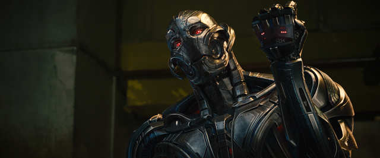
Ultron was an interesting concept: a monster created by Tony Stark himself. Stark’s intentions, of course, were to save the world with Ultron’s artificial intelligence capabilities, but Ultron gained a conscience and along with that came a hatred for humanity. Ultron’s goal was to wipe humans out, leaving only metal. Ultron was fine, but his goals intentions were a stretch.
Justin Hammer
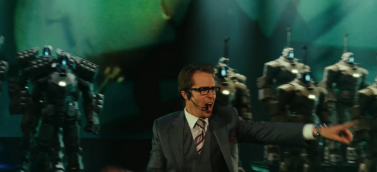
Hammer was a bit lazily written. He’s jealous of Tony Stark and will do anything to damage Stark’s reputation, and attempted to build a bigger, better version of Stark’s Iron Man suit.
Dormammu
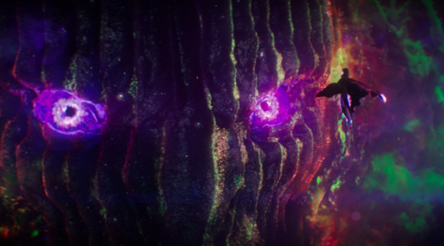
Dormammu has one thing going for him: of all the MCU villains, he definitely has the biggest face. Dormammu isn’t necessarily a bad bad guy, but his methods, motives, and goals are repetitive, especially within the MCU. He wants to take over the universe and to do that he must destroy Earth!
Yellowjacket
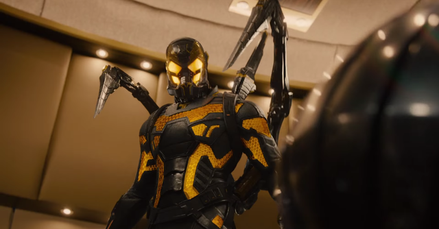
Darren Cross was the CEO of Cross Technological Enterprises, a direct competitor of companies like Stark Enterprises, Trask Industries, and Oscorp. Darren was a successful self-made man but after realizing that he was suffering from a rare heart condition, he underwent a radical surgical procedure.
Alexander Pierce
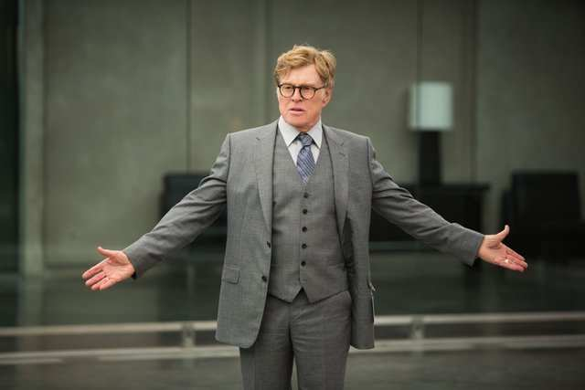
Alexander Goodwin Pierce was one of HYDRA's leaders and its top undercover operative inside the United States Government, S.H.I.E.L.D., and the World Security Council. He commanded the HYDRA forces within S.H.I.E.L.D., working to create a world so chaotic, that its people would give up their own freedoms willingly. To that end, he created Project Insight, a project that would have given HYDRA absolute control over the world, inciting the HYDRA Uprising. His plan was stopped by Captain America, Black Widow, Falcon, Maria Hill, and Nick Fury during the Battle at the Triskelion, in which he was killed by Director Fury.
Ronan the Accuser
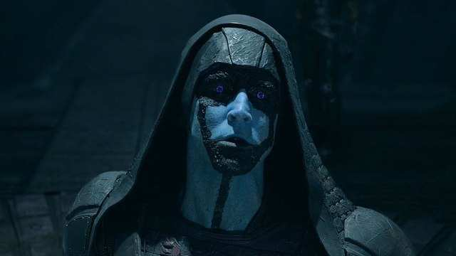
Ronan, also known as Ronan the Accuser was a radical member of the Kree race who was disgusted by a peace treaty made between the Kree Empire and Xandar. A ferocious, genocidal militarist, Ronan attempted to eradicate the Xandarians by forging an alliance with the Mad Titan Thanos, offering the Orb in exchange for the destruction of Xandar. After a long search, Ronan acquired the Orb but, after having seen its true destructive capabilities, decided against giving it to Thanos and chose to take the Orb's power for himself. Using his new-found power, he attacked Xandar, but was defeated and killed by the combined strength of the Guardians of the Galaxy.
Malekith
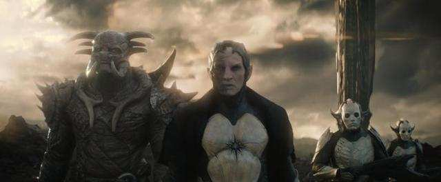
Malekith (Mälekith in Shiväisith) was the utterly cruel and malevolent leader of the Dark Elves, a race of beings said to be older than the universe itself. Born in a realm of complete darkness, Malekith led his people in a War against the Asgardians, using an ancient weapon known as the Aether, but they were thought to have been destroyed thousands of years ago during a final battle against the Asgardian King Bor. Malekith had survived, however, and after going into hiding for thousands of years, he returned during the next Convergence and sought to retake the Aether and use its power to transform the universe by plunging it back into eternal darkness. Before his attempt could succeed, however, Malekith and his armies were finally defeated by Bor's grandson, Thor, in the Battle of Greenwich, resulting in the death of Malekith.
Whiplash
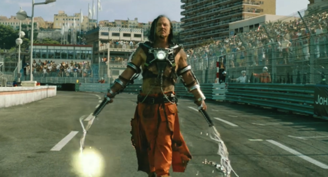
Ivan Antonovich Vanko was a Russian physicist and the son of the disgraced scientist Anton Vanko. When Vanko's father died penniless due to the actions of Howard Stark, Vanko swore his revenge against Stark's own son, Tony and the whole Stark family for all the ruin and humiliation suffered by him and his own father, designing armor similar to Iron Man in order to publicly defeat him and destroy the reputation of his own family. Although his first attempt failed and he was then arrested, Vanko eventually joined forces with Justin Hammer, who had recruited him to build the Hammer Drones which Vanko stole in another attempt at Stark's life until he was finally defeated by the combined efforts of War Machine and Iron Man. In a final bid, Vanko sacrificed himself in a desperate attempt to destroy the Stark legacy.
Emil Blonsky
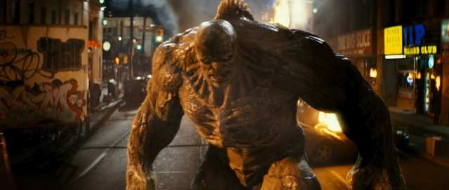
Emil Blonsky is a former special-ops commando with the British Royal Marines on loan to General Thaddeus Ross in his efforts to capture Bruce Banner better known as Hulk. Blonsky was injected with a small dose of the mothballed original Super Soldier Serum and later was injected with Bruce Banner's blood causing him to transform into the Hulk-sized Abomination. He then proceeded to go on a rampage in Harlem until he was defeated by Hulk and captured by the United States Armed Forces.
Thanos
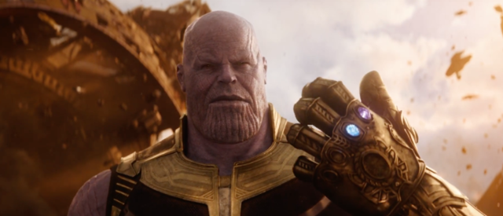
Thanos, referred to as the Dark Lord by his most loyal underlings and the Mad Titan by the galactic community, is a powerful Titan warlord who rules over a distant region of space and commands two massive armies, known as the Chitauri and the Outriders, and a small group of followers known as the Black Order. His own main objective was to bring stability from the universe, as he believed its massive population would inevitably use up the universe's entire resources and condemn it. However, his methodology to succeed was warped; through using the Infinity Stones, Thanos intended to harness their power to exterminate half of life in the universe.